Galleria fotografica
Di seguito alcune immagini della casa e dei suoi interni
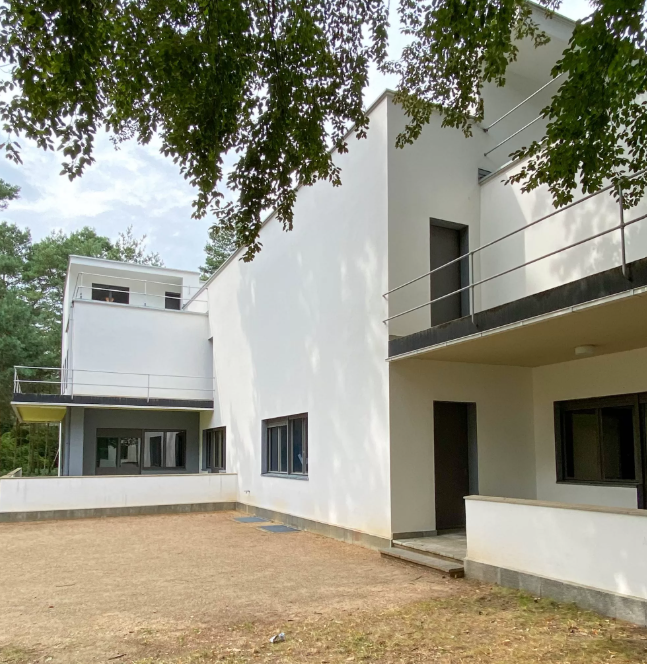 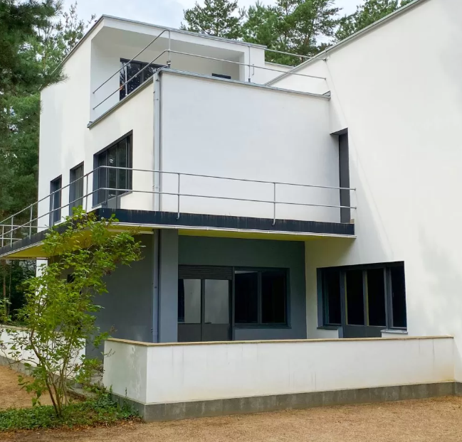
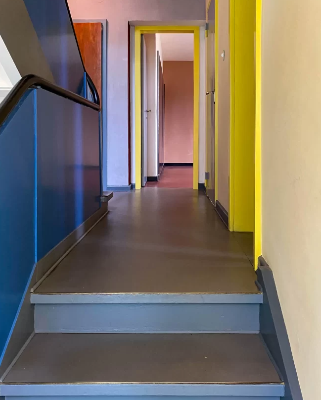
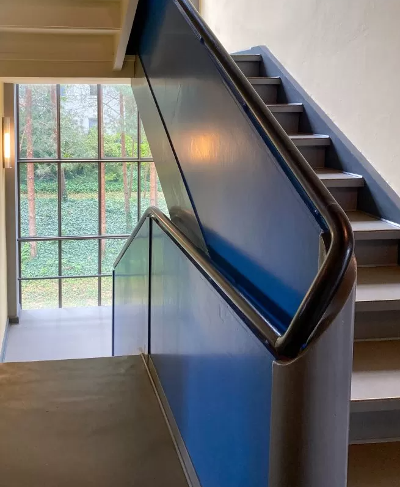
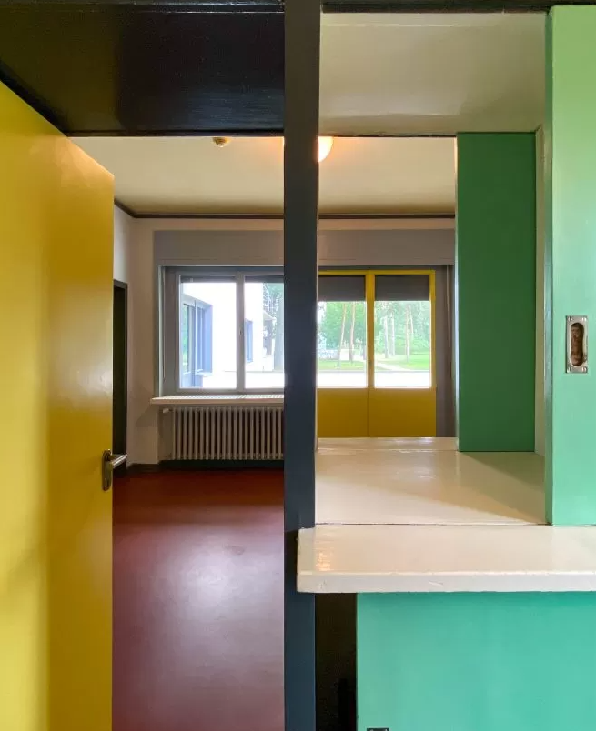
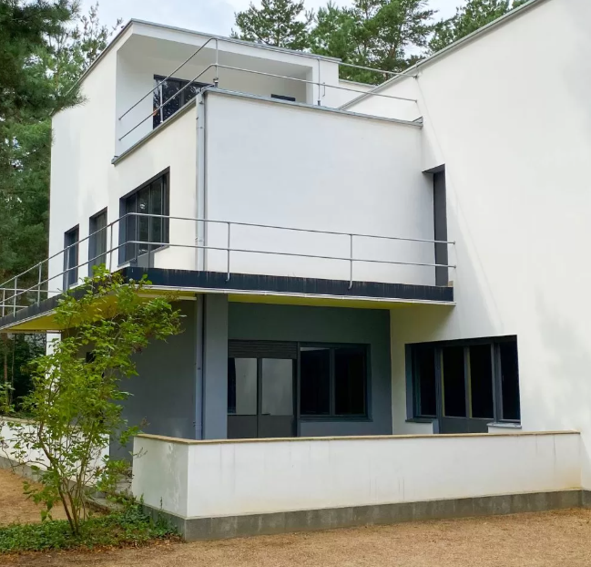
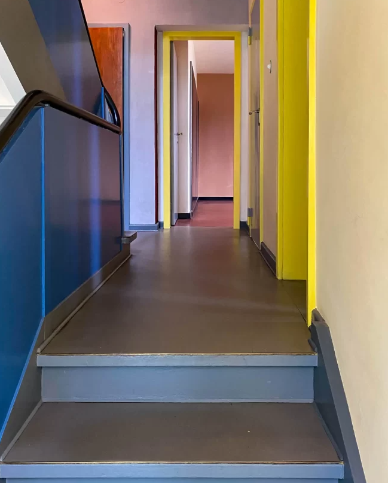
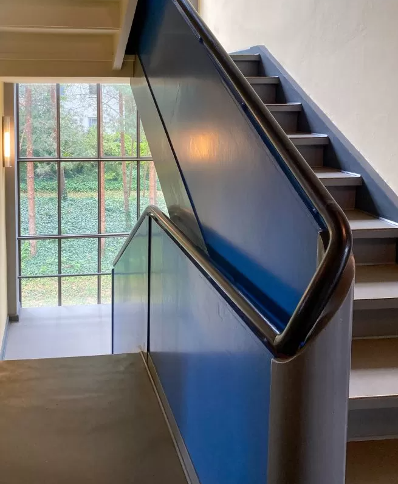
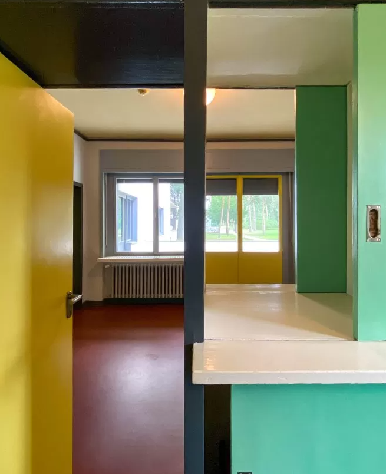
La casa dei maestri Wassily Kandinsky e Paul Klee si trova a Dessau, in Germania, all’interno del complesso noto come il Bauhaus, la celebre scuola di arte, design e architettura fondata da Walter Gropius nel 1919. Questo complesso rappresenta uno dei luoghi più iconici del movimento modernista e del design funzionale del XX secolo. Le case dei maestri erano destinate ad ospitare gli insegnanti della scuola e si trovano in un’area tranquilla, circondata da giardini, a poca distanza dalla scuola stessa, creando un ambiente che univa lavoro creativo e vita quotidiana.
Le case dei maestri riflettono pienamente i principi del Bauhaus: funzionalità, semplicità e integrazione tra forma e funzione. Progettate da Walter Gropius negli anni ’20, queste abitazioni sono caratterizzate da linee geometriche essenziali, uso di materiali moderni come il cemento, il vetro e l’acciaio, e ampie finestre che permettono alla luce naturale di invadere gli spazi interni. Gli interni sono concepiti per essere pratici ma anche stimolanti per la creatività, con un design minimalista che privilegia lo spazio aperto e la modularità degli arredi. L’attenzione è posta sulla combinazione armoniosa tra arte e vita quotidiana, in modo che la casa stessa diventi un luogo di ispirazione.
Kandinsky e Klee sono tra i più importanti artisti associati al Bauhaus e hanno influenzato profondamente la storia dell’arte moderna. Entrambi erano insegnanti nel Bauhaus e hanno portato idee innovative che hanno coniugato l’arte con la teoria, la musica e la filosofia. Kandinsky, pioniere dell’astrattismo, ha enfatizzato il ruolo del colore e della forma come espressione emotiva e spirituale. Klee, con la sua vasta sperimentazione stilistica, ha esplorato il simbolismo e la leggerezza del segno grafico. La casa, come spazio vissuto da questi maestri, riflette questa fusione di arte e design: ogni elemento architettonico e decorativo può essere visto come un’estensione della loro visione artistica, un laboratorio in cui la vita e l’arte si incontrano continuamente.
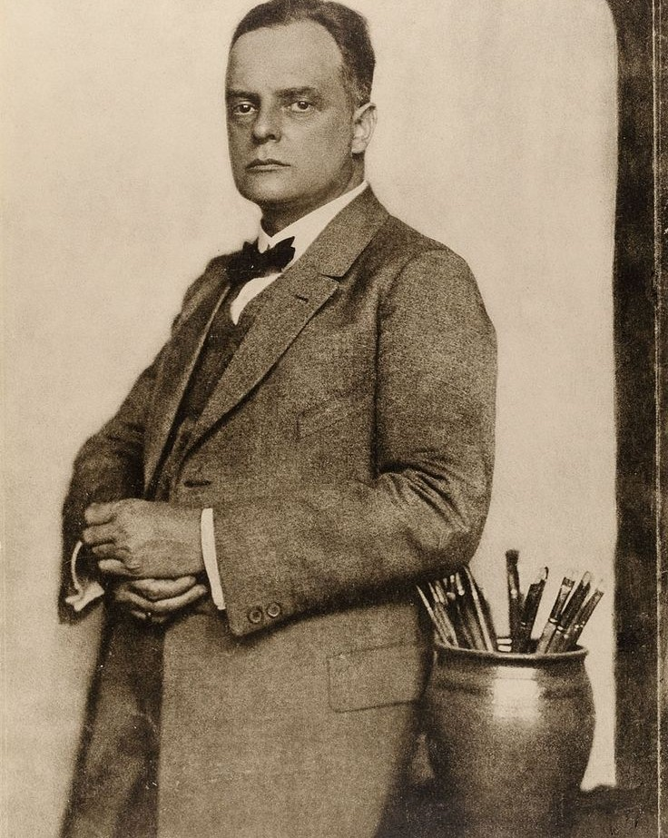Di seguito alcune immagini della casa e dei suoi interni
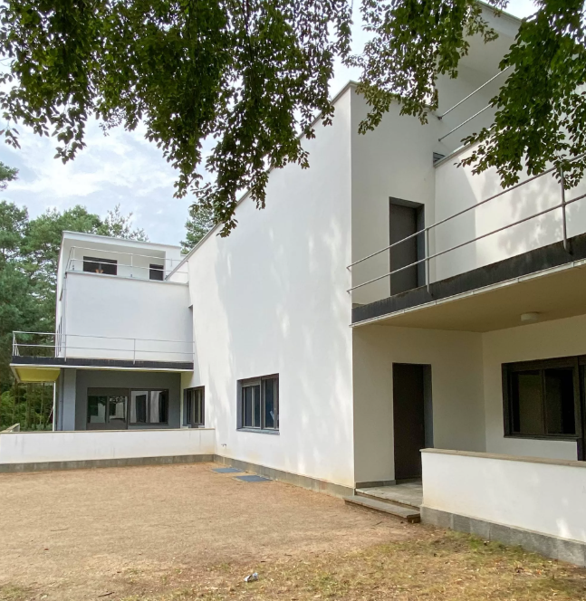
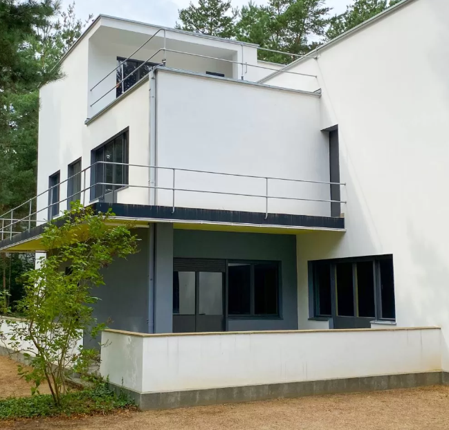
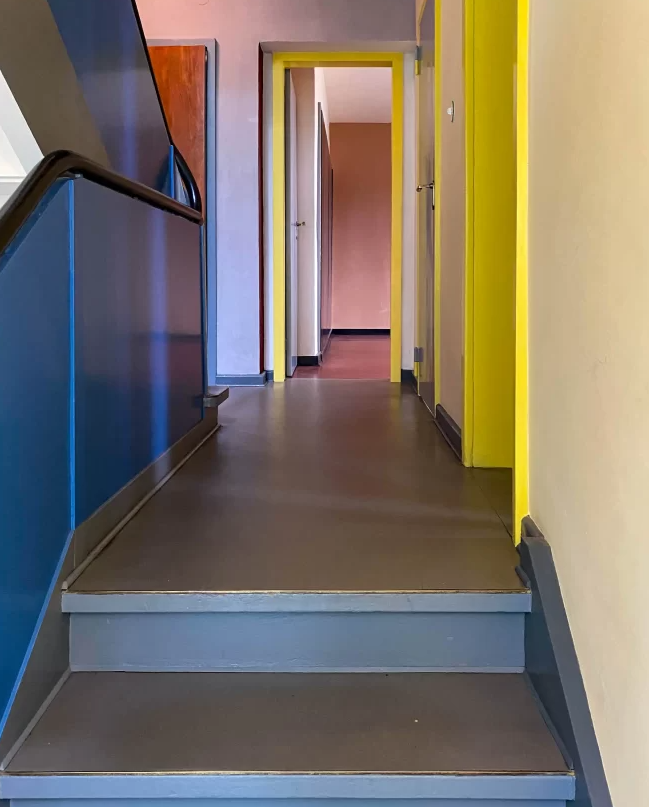
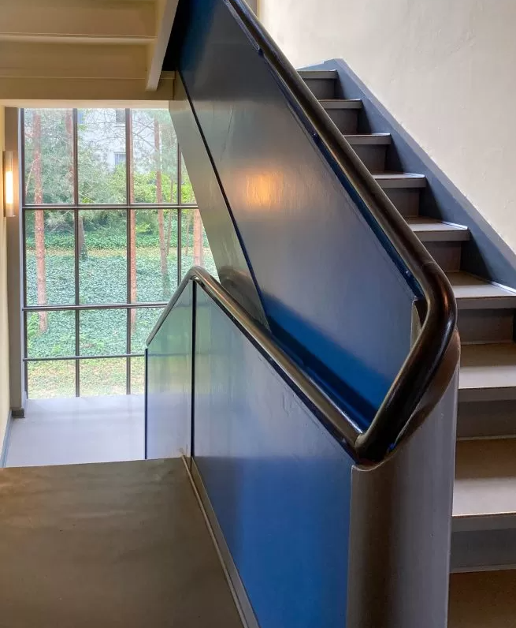
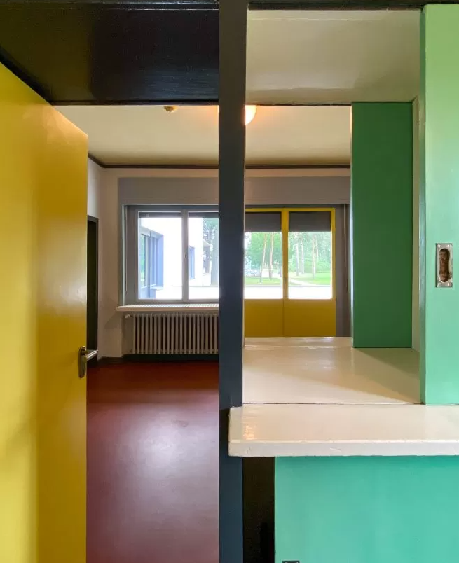